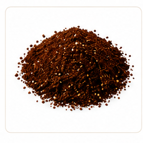
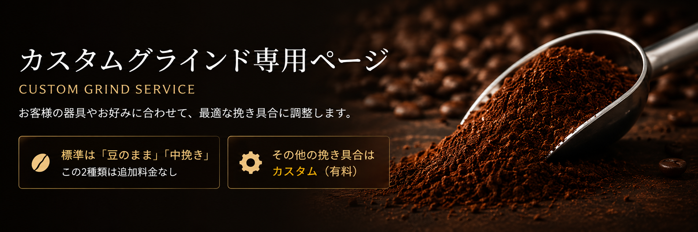
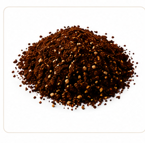
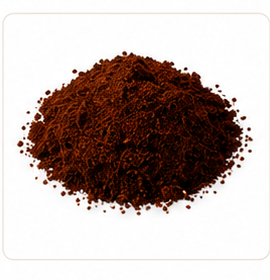
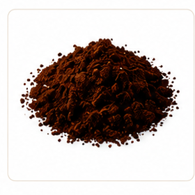
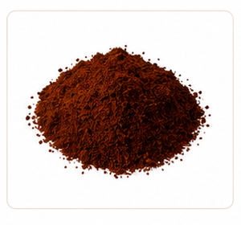

おすすめの挽き具合
中挽き
Medium

バランスの良い味わいで、ペーパードリップに適しています。
選択中：ペーパードリップ

CUSTOM GRIND SERVICE
お客様の器具やお好みに合わせて、最適な挽き具合に調整します。
選択すると、おすすめの挽き具合が自動で表示されます。
Medium

バランスの良い味わいで、ペーパードリップに適しています。
選択中：ペーパードリップ
粗いものから細かいものへ並んでいます。

たっぷりのお湯で、ゆっくり抽出する器具向け。
フレンチプレス・金属フィルターバランスが良く、最も使いやすい標準挽き。
ペーパードリップ・コーヒーメーカー
しっかりしたコクと濃さを引き出します。
ネルドリップ・サイフォン
濃厚な味わいで、エスプレッソに近い抽出向け。
全自動マシン・セミオート
非常に細かい、エスプレッソ専用の挽き目です。
エスプレッソマシン中粗・細・極細＋¥110（税込）
パウダー挽き＋¥220（税込）
※価格はサンプルです。実際の設定価格に合わせて変更してください。加工開始後は変更できません。注文確定前にご確認ください。
使用器具を選択すると、上部におすすめが表示されます。
各商品ページで、それぞれ希望する挽き方を選択してください。
ご注文後にグラインドします。
器具と用途に合わせて調整します。
挽き具合に迷われたらご相談ください。
不具合やご不明点に対応します。